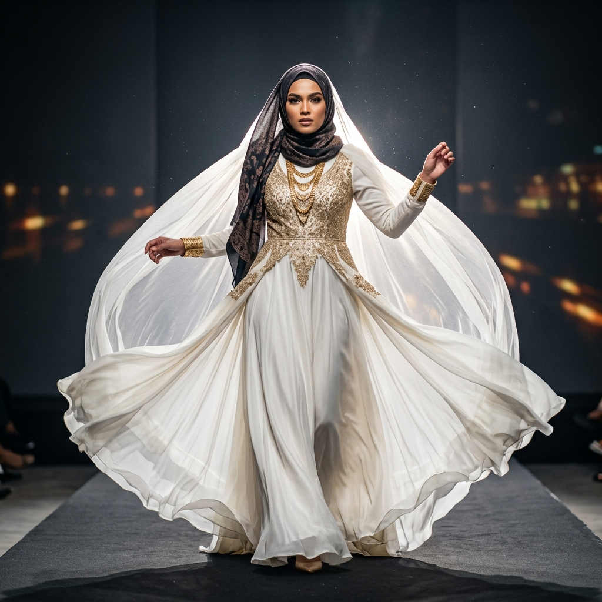
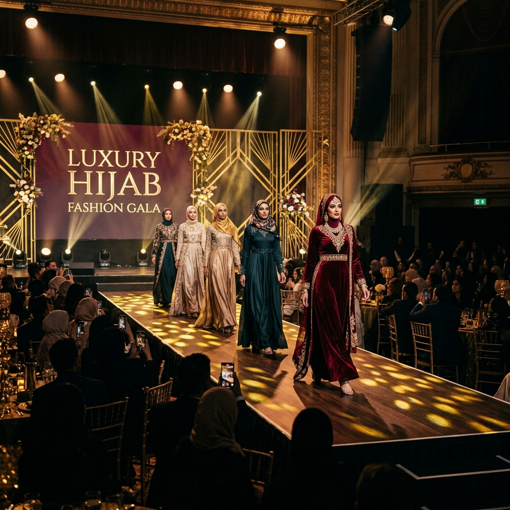

Catwalk — atau runway walk — adalah fondasi dari setiap karir modeling. Ini bukan sekadar berjalan dari titik A ke titik B. Ini adalah seni mengkomunikasikan kekuatan, keanggunan, dan kepribadian melalui setiap langkah. Di Elmaz, pelatihan catwalk adalah modul pertama yang kami ajarkan karena ini membentuk fondasi untuk semua keterampilan lainnya.
Anatomi Catwalk yang Sempurna
Sebelum melangkah ke runway, penting untuk memahami apa yang membentuk catwalk yang profesional. Ada empat elemen utama yang harus dikuasai:
1. Postur (The Foundation)
Postur adalah segalanya dalam catwalk. Bayangkan ada benang tak terlihat yang menarik Anda dari ubun-ubun ke langit. Bahu rileks tetapi terbuka, dada sedikit ke depan, dan perut tertarik ke dalam. Tulang punggung harus lurus seperti tiang — ini memberikan kesan tinggi, percaya diri, dan berkuasa.
Kesalahan umum yang sering kami lihat pada pemula adalah bahu yang membungkuk ke depan — ini secara instan mengurangi kesan keanggunan dan kekuatan. Latihan sederhana: berdiri bersandar pada dinding selama 5 menit setiap hari dengan tumit, bokong, bahu, dan belakang kepala menyentuh dinding.

2. Langkah (The Walk)
Di dunia modeling, ada istilah "walking on a line" — bayangkan ada garis lurus di lantai dan setiap langkah Anda mendarat tepat di garis itu, atau bahkan sedikit menyilang. Ini menciptakan gerakan hip yang adalah signature dari model catwalk profesional.
Tips untuk langkah yang sempurna:
- Langkah medium: Tidak terlalu lebar dan tidak terlalu pendek — sekitar satu setengah panjang kaki Anda
- Heel first: Selalu mendarat dengan tumit terlebih dahulu, diikuti oleh ujung kaki
- Kaki lurus: Hindari menekuk lutut secara berlebihan saat melangkah
- Gerakan lengan: Ayunkan lengan secara natural — tidak terlalu banyak, tidak terlalu kaku
3. Tempo (The Rhythm)
Tempo catwalk bervariasi tergantung pada jenis fashion show, musik, dan desainer. Namun sebagai aturan umum:
- High fashion / editorial: Tempo lebih lambat, dramatis, setiap langkah penuh intensi
- Commercial / ready-to-wear: Tempo medium, energik tetapi elegan
- Bridal / formal: Tempo paling lambat, sangat anggun dan deliberate
"Catwalk bukan tentang berjalan cepat atau lambat — ini tentang berjalan dengan tujuan. Setiap langkah harus terasa seperti sebuah keputusan."
4. Attitude (The X-Factor)
Ini adalah elemen yang paling sulit diajarkan tetapi paling penting. Attitude adalah energi tak terlihat yang membuat seseorang tidak bisa mengalihkan pandangan dari Anda. Ini datang dari kepercayaan diri yang genuine — keyakinan bahwa Anda layak berada di atas runway itu.
The Turn: Momen Paling Krusial
Di ujung runway, model melakukan "turn" — pembalikan arah yang menjadi momen paling dramatis dari keseluruhan walk. Ada beberapa jenis turn:
- The Classic Turn: Berhenti, pivot 180 derajat pada satu kaki, lanjutkan berjalan
- The Pause Turn: Berhenti, berpose sejenak (2-3 detik), lalu turn — memberikan momen bagi fotografer
- The Fluid Turn: Tidak berhenti sepenuhnya, melainkan melakukan turn yang mengalir dalam gerakan — lebih modern dan dinamis

Latihan Harian untuk Pemula
Menguasai catwalk membutuhkan latihan yang konsisten. Berikut adalah rutinitas harian yang kami rekomendasikan:
- Posture check (5 menit): Latihan dinding untuk mengoreksi postur
- Line walking (10 menit): Gunakan selotip di lantai sebagai panduan garis
- Mirror practice (10 menit): Berlatih di depan cermin full-length untuk melihat keseluruhan pose
- Music variation (5 menit): Praktikkan walk dengan berbagai tempo musik
- Video recording (5 menit): Rekam diri Anda dan tinjau untuk perbaikan
Ingat — bahkan supermodel paling terkenal di dunia pun pernah menjadi pemula. Kunci keberhasilan terletak pada konsistensi latihan dan kemauan untuk terus berkembang. Setiap langkah yang Anda ambil di latihan hari ini membawa Anda satu langkah lebih dekat ke runway impian Anda.